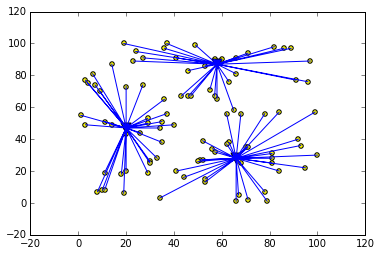
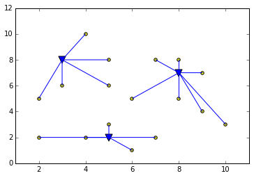

The K-Median Problem¶
The K_median problem deals with finding pseudo centers in a cloud of points.
To begin, let’s generate a random set of points in the plane, with coordinates ranging from 1 to 100.¶
First, we specialize a namedtuple class to model 2D points:
from collections import namedtuple
class Point(namedtuple("TPoint", ["x", "y"])):
def __str__(self):
return "P<%g,%g>" % (self.x, self.y)
def coords(self):
return (self.x, self.y)
Now define the Euclidean distance function between two points:
import math
def euclidean_distance(p1, p2):
dx = p1.x - p2.x
dy = p1.y - p2.y
return math.sqrt(dx * dx + dy * dy)
We also need an auxiliary function to generate the distance matrix between points. For now, we use the Euclidean distance, but any distance in the plane is sufficient.
def generate_matrix(points):
matrix = {(p, q): euclidean_distance(p, q) for p in points for q in points}
return matrix
Inside this set of points, we want to choose some points, say C, which have a “centric” situation within the set. More precisely, we want to link any point to exactly one “pseudo-center” in such a way that the total distance from any point to its pseudo-center is minimal. If C=1 this is the classical barycenter of the set of points, but for greater values of C, this can become less intuitive. We need a small model to generate these pseudo-centers.
Install the CPLEX for Python library:
!pip install docplex
Requirement already satisfied (use --upgrade to upgrade): docplex in /Users/docloud/anaconda/lib/python2.7/site-packages
Requirement already satisfied (use --upgrade to upgrade): docloud>=1.0.0 in /Users/docloud/anaconda/lib/python2.7/site-packages (from docplex)
Requirement already satisfied (use --upgrade to upgrade): futures in /Users/docloud/anaconda/lib/python2.7/site-packages (from docplex)
Requirement already satisfied (use --upgrade to upgrade): requests in /Users/docloud/anaconda/lib/python2.7/site-packages (from docplex)
Requirement already satisfied (use --upgrade to upgrade): six in /Users/docloud/anaconda/lib/python2.7/site-packages (from docplex)
Requirement already satisfied (use --upgrade to upgrade): enum34 in /Users/docloud/anaconda/lib/python2.7/site-packages (from docloud>=1.0.0->docplex)
Enter DOcloud credentials:
from docplex.mp.environment import Environment
env = Environment()
env.print_information()
* system is: Darwin 64bit
* CPLEX wrapper is not available
* Numpy is present, version is 1.10.1
* Matplotlib is present, version is 1.4.3
from docplex.mp.context import DOcloudContext
context = DOcloudContext(url="PUT_YOUR_DOCLOUD_URL_HERE",
api_key="PUT_YOUR_DOCLOUD_KEY_HERE")
from docplex.mp.model import Model
def build_kmedian1(points, distance_matrix, nb_hubs=1):
# any point is a potential hub
hubs = points
assert isinstance(distance_matrix, dict)
BIGDIST = 999999999
for h in hubs:
for p in points:
if (h, p) in distance_matrix:
assert distance_matrix[h, p] >= 0
if h == p:
assert distance_matrix[h, p] == 0
elif (p, h) in distance_matrix:
assert distance_matrix[p, h] >= 0
if h == p:
assert distance_matrix[p, h] == 0
else:
print("* forbidden arc {0} -> {1}".format(h, p))
# now build the model
kmedian_name = "Kmedian_p_{0}_h_{1}".format(len(points), nb_hubs)
mdl = Model(docloud_context=context)
# vars
mdl.hub_vars = mdl.binary_var_dict(hubs, name="is_hub")
mdl.link_vars = mdl.binary_var_dict2(hubs, points, name="link")
# cts
# ct #1. each point can be linked only to an open hub
for p in points:
for h in hubs:
mdl.add_constraint(mdl.link_vars[h, p] <= mdl.hub_vars[h])
# zap arcs with "infinite" distance
for h in hubs:
for p in points:
if distance_matrix[h, p] >= BIGDIST:
mdl.add_constraint(mdl.link_vars[h, p] == 0)
elif p == h:
mdl.add_constraint(mdl.link_vars[h, p] == 0)
# ct #2 each non hub point is linked to exactly one hub.
for p in points:
mdl.add_constraint(mdl.sum(mdl.link_vars[h, p] for h in hubs) == 1 - mdl.hub_vars[p])
# ct #3 total nb of open hubs
mdl.add_constraint(mdl.sum(mdl.hub_vars[h] for h in hubs) == nb_hubs)
# minimizee total distance from points to hubs
def get_dist(h, p):
return distance_matrix.get((h, p), BIGDIST)
total_distance = mdl.sum(mdl.link_vars[h, p] * get_dist(h, p) for h in hubs for p in points)
mdl.minimize(total_distance)
return mdl
def solve_kmedian1(points, distance_matrix, nb_hubs=1):
mdl = build_kmedian1(points, distance_matrix, nb_hubs)
# any point is a potential hub
hubs = points
ok = mdl.solve()
if not ok:
print("Kmedian model fails")
return None
else:
total_distance = mdl.objective_value
open_hubs = [h for h in hubs if float(mdl.hub_vars[h]) >= 0.9]
edges = [(p, h) for p in points for h in hubs if float(mdl.link_vars[p, h]) >= 0.9]
# returning a tuple
print("total distance=%g" % total_distance)
print("#hubs={0}".format(len(open_hubs)))
for h in open_hubs:
# h is an index
print("--hub: {0!s}".format(h))
res = total_distance, open_hubs, edges
return res
Now let’s try the algorithm on a simple topology with three points as a triangle and one point at the center of gravity of the triangle. Of course, we expect the hub to be at the center of gravity of the triangle.
simple_points = [ Point(0,0), Point(10,0), Point(5, 10), Point(5,5)]
simple_matrix = {(p, q): euclidean_distance(p, q) for p in simple_points for q in simple_points}
simple_res = solve_kmedian1(points=simple_points, distance_matrix=simple_matrix, nb_hubs=1)
Warning: CPLEX DLL not found, will solve on DOcloud * #non-compliant LP name: |is_hub_P<0,0>| total distance=19.1421 #hubs=1 --hub: P<5,5>
Define a function to plot the result: the initial points, the hubs found by the algorithms, and the edges.
if env.has_matplotlib:
import matplotlib.pyplot as plt
%matplotlib inline
def plot_kmedian(points, hubs, edges):
if env.has_matplotlib:
plt.cla()
pxs = [p.x for p in points]
pys = [p.y for p in points]
plt.scatter(pxs, pys, c="yellow", marker='o')
hxs = [h.x for h in hubs]
hys = [h.y for h in hubs]
plt.scatter(hxs, hys, c="blue", marker='v', s=100)
edge_xs = []
edge_ys = []
for (pe, he) in edges:
edge_xs.append(pe.x)
edge_xs.append(he.x)
edge_xs.append(None)
edge_ys.append(pe.y)
edge_ys.append(he.y)
edge_ys.append(None)
plt.plot(edge_xs, edge_ys)
plt.show()
else:
print("warning: no display")
Let’s try to plot the result of the simple topology:
(simple_distance, simple_hubs, simple_edges) = simple_res
print("hubs=%s" % str(simple_hubs))
print("simple=%s" % simple_points)
print("edges=%s" % str(simple_edges))
plot_kmedian(simple_points, simple_hubs, simple_edges)
hubs=[TPoint(x=5, y=5)]
simple=[TPoint(x=0, y=0), TPoint(x=10, y=0), TPoint(x=5, y=10), TPoint(x=5, y=5)]
edges=[(TPoint(x=5, y=5), TPoint(x=0, y=0)), (TPoint(x=5, y=5), TPoint(x=10, y=0)), (TPoint(x=5, y=5), TPoint(x=5, y=10))]
/Users/docloud/anaconda/lib/python2.7/site-packages/matplotlib/collections.py:590: FutureWarning: elementwise comparison failed; returning scalar instead, but in the future will perform elementwise comparison
if self._edgecolors == str('face'):
The hub is indeed at the center of gravity. Now let’s try with a random set of points set in the upper right quadrant [0..100]
import random
def generate_random_points(nb_points, grid_size=100):
xs = [random.randint(0, grid_size) for _ in range(nb_points)]
ys = [random.randint(0, grid_size) for _ in range(nb_points)]
return set([Point(x, y) for (x, y) in zip(xs, ys)])
rand_points = generate_random_points(nb_points=100, grid_size=100)
# now generate the matrix
rand_matrix = generate_matrix(rand_points)
# and solve the kmedian problem looking for two ceneters this time
(rand_distance, rand_hubs, rand_edges) = solve_kmedian1(rand_points, rand_matrix, nb_hubs=3)
plot_kmedian(rand_points, rand_hubs, rand_edges)
Warning: CPLEX DLL not found, will solve on DOcloud * #non-compliant LP name: |is_hub_P<30,26>| total distance=2188.64 #hubs=3 --hub: P<58,87> --hub: P<66,28> --hub: P<20,47>
Electrifying Example¶
A new city is being built which will include 20 distinct neighborhoods as shown by the house icons in the map. As part of the planning process, electricity needs to be connected to each of the neighborhoods.
The city has been allocated funds to put in 3 electrical substations to service the electrical needs of the neighborhoods. The substations are represented by the 3 electrical box icons to the right of the map. Because laying electrical line to each neighborhood is expensive, the placement of the substations on the map requires careful consideration.
A neighborhood will be serviced by the nearest electrical substation. A neighborhood may only be connected to one substation. The substations may be placed in any cell (including the same cell as an existing neighborhood). The cost of electrical wiring is 1M dollars per km. Distances are measured using a direct line between cells, which are each 1km apart. For example, the distance between cell A1 and B2 is 1.41km.
Question: What is the minimum cost required to connect all neighborhoods to electricity?
References¶
- The PuzzlOr - Electrifying (http://puzzlor.com/2014-12_Electrifying.html) .
Let’s begin with defining the points of our map that we want to connect:
rand_points = set([Point(x=2,y=2),Point(x=2,y=5),Point(x=3,y=6),Point(x=3,y=8),Point(x=4,y=2),Point(x=4,y=10),Point(x=5,y=2),Point(x=5,y=3),Point(x=5,y=6),Point(x=5,y=8),Point(x=6,y=1),Point(x=6,y=5),Point(x=7,y=2),Point(x=7,y=8),Point(x=8,y=5),Point(x=8,y=7),Point(x=8,y=8),Point(x=9,y=4),Point(x=9,y=7),Point(x=10,y=3)])
Let’s now solve the problem:
# now generate the matrix
rand_matrix = generate_matrix(rand_points)
# and solve the kmedian problem looking for tree centers this time
(rand_distance, rand_hubs, rand_edges) = solve_kmedian1(rand_points, rand_matrix, nb_hubs=3)
plot_kmedian(rand_points, rand_hubs, rand_edges)
Warning: CPLEX DLL not found, will solve on DOcloud * #non-compliant LP name: |is_hub_P<4,10>| total distance=36.518 #hubs=3 --hub: P<8,7> --hub: P<3,8> --hub: P<5,2>
The total cost is 36.518 M dollars, and we need to position the 3 electrical substations on : 8G, 3H, 5B.